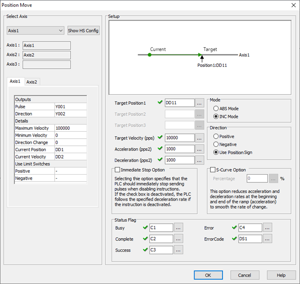
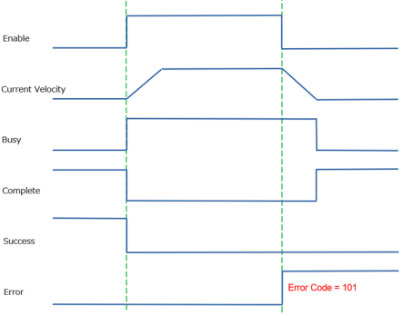
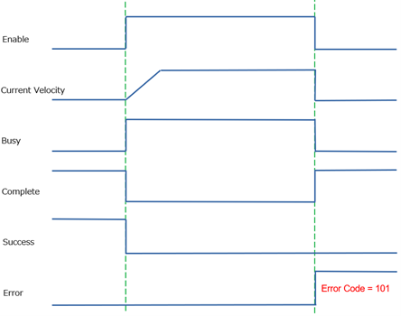
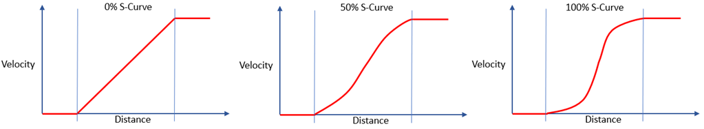

|
|
|
Topic: CL296 |
Position Move for PTO Axis |
|
|
The Position Move Instruction is used to move the Axis from the Current Position to a new Target Position. The Target Position can either be an Absolute(ABS) Position, or an Incremental(INC) Position. The Move can include a Single Axis, or up to 3-Axis using Interpolation. The motion profile is Trapezoidal and includes 3 segments: Acceleration, Target Velocity, Deceleration. The settings (Target Position, Target Velocity, Acceleration, Deceleration) cannot be changed while the instruction is enabled.

1 Select Axis: The PTO Axis must be created in the High Speed I/O Setup before placing the Position Move Instruction into ladder.
2 Axis Names: These are the Axis names as defined in the High Speed I/O Setup.
3 Axis Settings: This is a read-only view of the Axis settings from the High Speed I/O Setup.
4 Target Position: Constant or DD Register. The value is either ABS or INC Mode. When using an Interpolated mode, each Axis has a separate Target Position.
5 Target Velocity: Constant or DD Register. For a single axis, the Axis will attempt to run at this speed, but is controlled by the rules configured for: Minimum Velocity, Maximum Velocity, Acceleration, Deceleration.
If Multiple axis are selected, the combined movement will be along a vector. The target velocity will be the combined axis’ vector velocity.
6 Acceleration: Constant or DD Register. The change of rate value used only during Acceleration (Pulses Per Second Squared).
If Multiple axis are selected, the combined movement will be along a vector. The target acceleration will be the combined acceleration on the vector.
7 Deceleration: Constant or DD Register. The change of rate value used only during Deceleration (Pulses Per Second Squared).
If Multiple axis are selected, the combined movement will be along a vector. The target deceleration will be the combined deceleration along the vector.
8 Mode:
ABS: Absolute Mode moves the axis to an absolute position relative to the Home position Ignore the Target Position Sign and always travel in the Positive Direction.
INC: Incremental Mode moves the axis to position relative to its Current position.
9 Direction: These settings control how the value in the Target Position will be interpreted.
Positive: Ignore the Target Position Sign and always travel in the Positive Direction.
Negative: Ignore the Target Position Sign and always travel in the Negative Direction.
Use Velocity Sign: Travel in the Positive Direction for Positive Positions, Travel in the Negative Direction for Negative Positions.
10 Immediate Stop Option: The behavior of an Aborted Move can be chosen.
Enabled: Selecting this option specifies that the PLC should immediately stop sending pulses when disabling instructions. This will abort the Move abruptly and likely lose the Axis Home reference if travelling at high speeds.
Disabled: If the check box is deactivated, the PLC follows the specified deceleration rate if the instruction is deactivated. The Axis will continue to follow its configured rules until reaching zero velocity.


11 S-Curve Option: This option smooths the velocity change to create non-linear transitions during Acceleration and Deceleration. The valid range is 1 to 100%. Increasing the S-Curve Percentage does not increase the time during the Velocity change because the rate of change is increased. At 100% S-Curve Percentage, the maximum Rate of Change will be 200% of the specified Acceleration or Deceleration values. The limits of the actual system must be considered, and these parameters adjusted to prevent position loss due to inertia or friction loses.

12 Busy: This C bit turns ON while the instruction is in operation and controlling the Axis. Only a single instruction can be in control of each Axis during any moment of time. This bit turns OFF when the instruction is Complete by Success or by Error.
13 Complete: This C bit turns ON when the instruction is Complete by Success or by Error. It stays ON until the instruction is re-enabled.
14 Success: This C bit turns ON to indicate the Axis has reached the commanded Target Position.
15 Error: This C bit turns ON to indicate a failure of the Instruction or Axis. It stays ON until the instruction is re-enabled. The Value in the Error Code register will indicate the problem.
16 Error Code: Assign a DS or DD register to store the Numeric Error Code.
|
|
Note: The System Bits SC150-SC152 “_PTO_AxisX_Ready_Flag” provide status information. |
|
PTO Error Codes
Home for PTO Axis
Velocity Move for PTO Axis
Pulse Train Output
Pulse Width Modulation